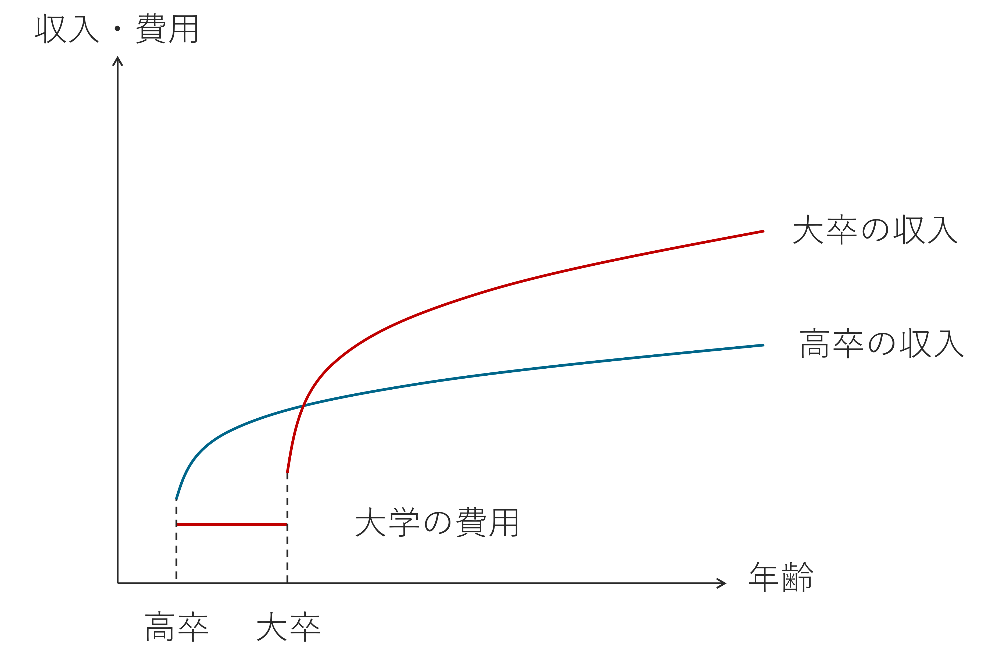
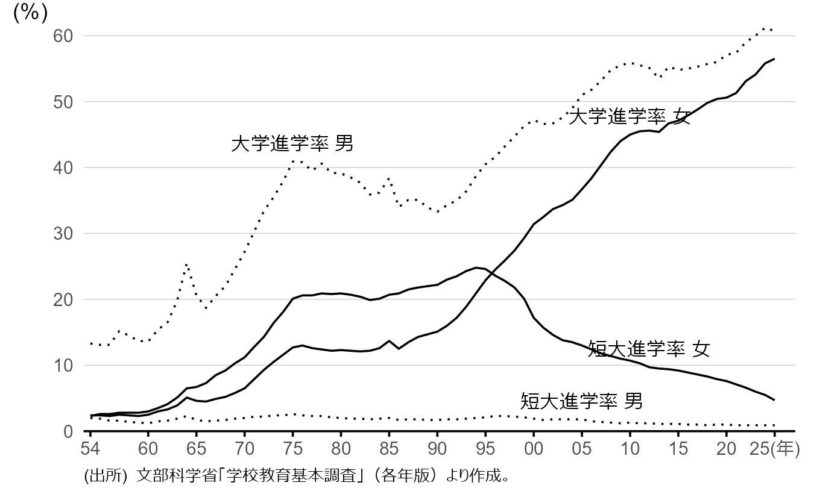
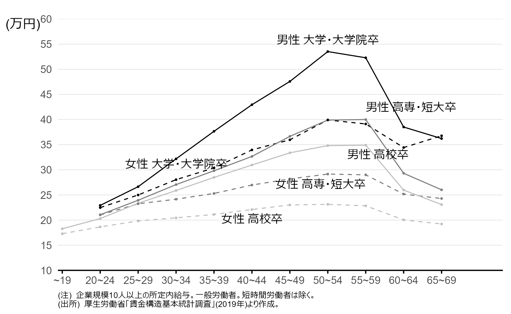
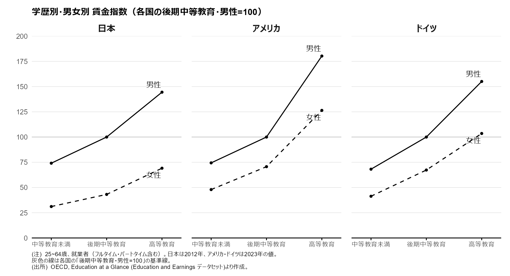
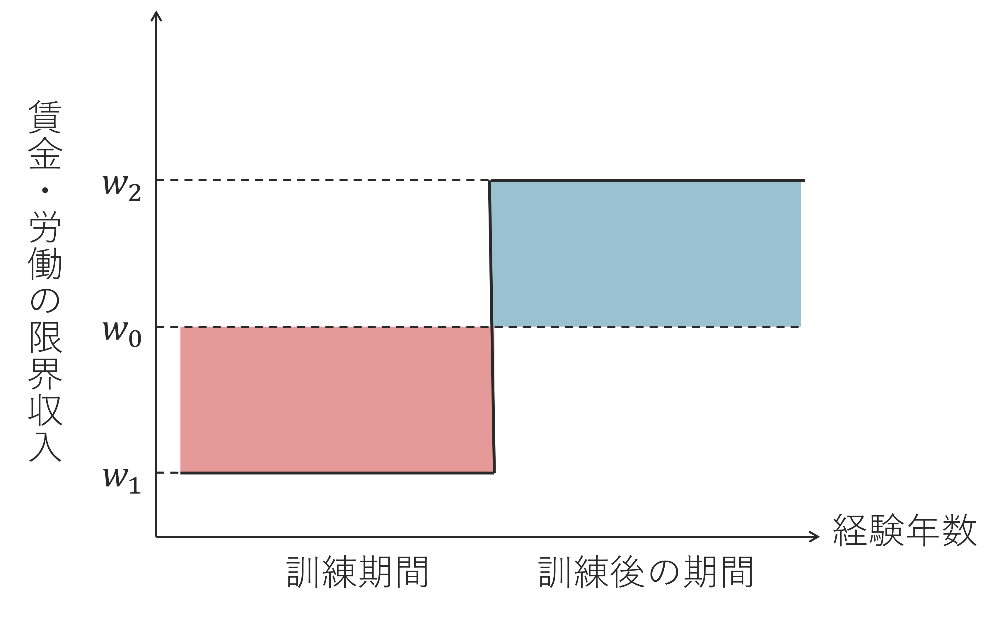
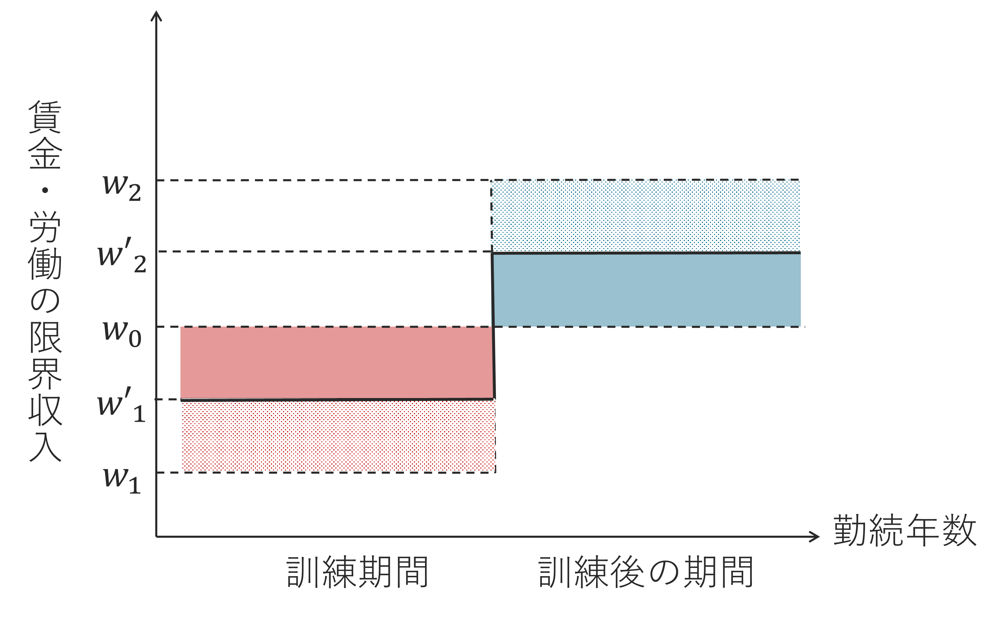
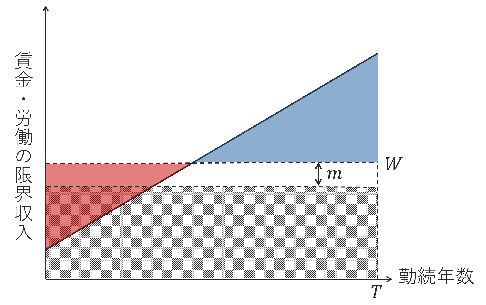

人的資本モデル
本資料は、大森義明・永瀬伸子（2021）『労働経済学をつかむ』（有斐閣）を参考に作成しています。
授業の目的に合わせて、一部構成や表現を調整しています。
就職活動やキャリアについて考えていると、「そもそもなぜ大学に通うのか」「企業はなぜ社員を育てるのか」「なぜ同じ会社に長く勤める人が多いのか」といった素朴な疑問がふと浮かぶことがあるかもしれません。
本章では、教育・能力・訓練・雇用制度をめぐる理論モデルを通じて、こうした疑問について経済学の視点から理解を深めていきます。
教育・訓練と人的資本
人的資本モデルとシグナリングモデル
高卒と大卒の収入の差
高校卒業後にそのまま就職するか、大学に進学するか――多くの人が一度は考えたことのある進路の分かれ道だと思います。その際、「高卒」と「大卒」で将来の収入がどれくらい違うのか気になった人もいるのではないでしょうか。
日本における平均初任給・生涯賃金は次の表のとおりです。
| 高卒初任給 | 大卒初任給 | 高卒と大卒の差 |
| 167,400円 | 210,200円 | 43,000円 |
| 1高卒生涯賃金 | 大卒・大学院卒生涯賃金 | 高卒と大卒の差 |
| 2億1千万円 | 2億7千万円 | 6千万円 |
2023年度の私立大学における4年間の平均的な学費2は、文系学部でおよそ410万円、理系学部でおよそ540万円です3。
大学に進学すると400〜500万円ほどの学費がかかりますが、生涯賃金は6千万円ほど増えます。平均的な学生にとって、大学進学は割の良い投資4だと言えるでしょう。

人的資本モデル
このように、人が持つ知識や能力を投資対象となる資本として捉える考え方を人的資本モデルと呼びます。
その他の条件が同じであれば、大卒として得られる期待収益から進学費用を差し引いた純収益が、高卒のそれを上回る人が大学に進学することになります。
現状、日本では高卒者のおよそ半数が大学に進学していますが、進学しない人がいるのはなぜでしょうか。
① 受験や卒業に心理的費用（努力や忍耐）が伴うため
学習に対する能力が高い人（努力のコストが低い人）ほど、大学に進学する傾向があります。
② 人は将来よりも現在を重視しがちである（将来の価値を割り引いて現在価値に換算する）ため
先ほどのグラフでは、現在の進学費用と将来の収入を同じ金額として比較していましたが、実際の意思決定では将来の収入は割り引いて評価されます。将来志向の強い人ほど大学に進学する傾向があります。
③ 平均を下回る生涯賃金しか見込めない人がいるため
パートやアルバイトで働いたり無職になったりする人もいるため、先ほど示した（平均的な賃金・退職金を前提とした）生涯賃金より低い水準しか期待できない人も存在します。また、雇用機会によって期待できる生涯賃金は異なるため、日本では雇用面で不利になりがちな女性よりも男性の方が大学に進学する傾向がありました。
ただし、ほとんどのOECD加盟国では1990年代前半に男女の進学率が逆転し、現在は女性の方が男性より大学進学率が高くなっています。
④ 学費を工面できない人がいるため
大学進学には学費がかかり、これを工面できない人もいます。経済学ではこれを借り入れ制約と呼びます。このため、裕福な家庭の出身者ほど大学に進学する傾向があり、奨学金などの学生向け貸付制度は、この制約を和らげる役割を果たします。
シグナリングモデル
大学進学の意思決定については、人的資本投資とは異なる観点からシグナリングという考え方も存在します。
人的資本モデルとシグナリングモデルでは、（大学）教育が果たす役割の捉え方が異なります。
人的資本モデルにおける（大学）教育：教育を通じて人的資本（個人のスキルや能力）そのものが高まる
\(\rightarrow\) 人的資本を育成する機能
シグナリングモデルにおける（大学）教育：教育自体が能力を高めるのではなく、教育を受けられたこと自体がその人の能力の高さを示す
\(\rightarrow\) 選別（ふるい分け）の機能
人的資本モデルとシグナリングモデルのどちらが実態に近いかを、データだけで判別するのは容易ではありません。どちらのモデルでも、能力の高い人ほど大学に進学し、大卒者の平均賃金が高卒者より高くなるという結果が予測されるからです。ただし、偶発的な事情で在学年数が延びた場合にも賃金が上がるという研究結果があることから、大学教育には少なくともある程度は人的資本を蓄積する役割があると考えられます。
確認クイズ：
次の文章に適切な語句を入れなさい。
人的資本とは、知識、能力、技能など、労働者による労働サービスの（企業にとっての）価値を生む総体のことを指す。大学進学は一種の であり、先に （受験勉強や学費）を負担し、卒業後に不確実な （生涯賃金）を得る。その他の条件を一定をすれば、2つの差である が高卒のそれを上回る人は大学に進学する
語句
収益 費用 消費 投資 純収益
モデルの応用：教育における男女の差異
人的資本モデルは、教育における男女の差を理解するうえでも役立ちます。
日本の大学進学率の推移

- 1954年当時は、高校進学者の割合が男女ともほぼ半数だった
- 1960年代の高度経済成長期に、家計所得の向上とホワイトカラー職の拡大によって進学率が上昇
- 1975年には男女とも9割超が高校に進学
- 同時期、男性の大学進学率も1割から4割へと上昇
- 女性はまず短大進学率の方が先に上昇し、大学進学率はそのあとに続いた
- 1986年に男女雇用機会均等法が施行
- 1994年に女性の短大進学率がピークを迎え、以降は大学進学率が短大進学率を逆転
- 2019年時点の大学進学率は男性56.6%、女性50.7%
欧米諸国では、近年女性の大学進学率が男性を上回るようになっています。日本でも、女性の雇用機会の広がりとともに女性の大学進学率が上昇してきた様子がうかがえます。
かつては新卒採用を男女別に行う企業が多く、女性は結婚するまでの間だけ補助的な業務に従事することが暗黙の前提とされていました。結婚や出産による退職を後押しするような退職金の割増制度を設けている企業も珍しくなく、実際に1985年当時の大企業における平均勤続年数は男性12.2年に対し女性4.4年だったとされています（賃金構造基本統計調査）。
こうした環境のもとでは、女性が大学に進学しても将来の収入増加が見込みにくく、進学を選びにくかったことも理解できます。
しかし日本でも、1990年代後半以降は女性の4年制大学志向が強まっています。
- 新卒採用やキャリア形成における男女格差の縮小
- 専業主婦という将来像の現実味が薄れたこと（ライフパターンの変化）
- 1997年・2006年・2016年に行われた男女雇用機会均等法の改正・強化
- 育児・介護休業制度の拡充
こうした環境の変化により、女性の人的資本投資の行動パターンが男性に近づいてきた面があると見られています。
また、大学進学率の推移はシグナリングという観点から捉えることもできます。
女性が4年制大学に進学し4年間の学校教育に投資することは、企業に対して長期的に就業する意思を示すことにもなるためです。実際、1980年当時の女性の進学先は文学部や家政学部など、将来的に主婦として家庭で過ごすことを前提とした選択が多く見られましたが、これも徐々に変化してきています。
とはいえ、専攻する学部には依然として大きな男女差が残っています。
| 学部 | 女性比率 |
|---|---|
| 文学部 | 65% |
| 法・政治学部 | 33% |
| 商・経済学部 | 30% |
| 理学部 | 28% |
| 工学部 | 15% |
文系学部は比較的女性比率が高く、理系学部は女性比率が低くなる傾向があります。
STEM（Science, Technology, Engineering and Mathematics: 科学・技術・工学・数学）分野は目覚ましく発展しており、女性の進出も期待される分野ですが、日本では依然として男子学生が多数を占めており、親や学校による進路指導にジェンダー・バイアスが働いている可能性が指摘されています。
女性が技術開発に関わることでイノベーションが促進されるという研究結果もあり、日本においてもSTEM分野への女性の進出が期待されています。
大学進学によって見込める収入には、男女でどのような違いがあるのでしょうか。

- 大学・大学院卒の男女差：20〜24歳時点ではほとんど差がない。男性は年齢とともに所定内給与が上昇していくが、女性の上昇幅はそれより緩やかで、高卒男性をわずかに上回る程度にとどまる
- 高卒の男女差：男性は年齢とともに所定内給与が上がっていくが、女性はあまり上がらない
学歴や職務経験によって賃金に差が生じる現象は、さまざまな国で見られます。

- どの国でも学歴による月収格差が存在する
- 日本は「数学的思考力」「読解力」ともにOECD平均を上回り分散も小さいにもかかわらず、学歴による賃金差は小さい
- 学歴による賃金差の大きさは、アメリカ \(>\) ドイツ \(>\) 日本の順になっている
- 日本では、大卒でありながら高卒程度で対応できる仕事に就いている人の割合が高いとの指摘がある（国立教育政策研究所）
- 日本の大卒者には若年期に下積みを経験する傾向があり、求人に学歴要件が明確に示されるポストが少ないとの指摘もある（三谷, 20205）
- 日本では、高等教育を受けた女性の月収が高卒男性の月収を下回っている
確認クイズ：
女性の大学進学がシグナリングとして働くとはどういう意味でしょうか？
企業内訓練
人的資本への投資は学校教育だけで完結するものではなく、働き始めてからも職場での訓練や研修、仕事を通じた経験の蓄積という形で続いていきます。
生産性は教育だけでなく、訓練（training）や、実際の仕事を通じて身につく熟練（learning-by-doing）によっても高まり、それに応じて賃金も上昇します。
学校教育と職場での訓練には、どのような違いがあるでしょうか。
学校教育
- 学費を自分で支払うため、費用を意識しやすい
- 将来の賃金や就職のしやすさという便益が得られる
- 幅広い企業で通用する能力が身につくと考えられる
職場での訓練
- 費用自体は発生しているが労働者本人が負担するわけではなく、逆に給料をもらいながら訓練を受けられる
- その企業での生産性が上がり、それに伴って賃金も上がるという便益が得られる
- その企業でしか通用しない能力が身につくこともある
この2種類の人的資本は、収益の性質という点で異なります。一般的人的資本の便益は労働者本人が受け取るのに対し、企業特殊的人的資本の便益は労働者と企業の双方にもたらされます。なぜこのような違いが生まれるのか、詳しく見ていきましょう。
一般的訓練
この例で、資格取得のための研修がもたらす便益としては、次のようなものが考えられます。
- 取得した資格は他の銀行でも通用し、転職時の賃金評価にもつながる
- 社会人としての基礎的なマナーが身につき、他社でも評価される
- 労働者の限界生産物が増えることで、労働の限界収入も増加する
このように、どの企業でも通用する能力を養う訓練が一般的訓練にあたります。
理論上、一般的訓練の便益は労働者が100%受け取ることになり、企業は生産性の向上分をそのまま100%賃金に反映させます。
そうしなければ、労働者が他企業に引き抜かれてしまうからです。一般的訓練は汎用性があるため、労働者の生産性向上は他企業でも同じだけ発揮できます。
ユウコの勤める銀行でも、見習い期間を終えるだけでなく資格を取得することでさらに給料が上がるようです。資格取得の過程で生産性が向上しているため、それに見合う賃金を払わなければ、他行に引き抜かれてしまうでしょう。
一方で、訓練の費用は、労働の限界収入の減少分と訓練の直接的な（金銭的な）費用の合計として捉えられます。
- 訓練に充てる時間の分だけ労働時間が減り、（訓練をしていない場合と比べて）労働の限界生産性が下がることで、労働の限界収益も減少する
- 研修費用など、直接の金銭的コストが発生する場合もある

- 訓練前の労働の限界収入を \(w_0\) とする
- 訓練期間中は労働時間が減るため、労働の限界収入は \(w_1\) に低下する
- これが見習い期間中の賃金の低さにあたる
- 訓練後は生産性が向上し、労働の限界収入は \(w_2\) に上昇する
- これに伴い賃金も上がる
- 訓練の総費用は赤い長方形の面積、労働者が受け取る訓練の収益は青い長方形の面積で表される
訓練の収益を100%労働者が受け取る以上、その費用も100%労働者が負担することになります。企業が費用を負担すると、労働者が引き抜かれた際にその分をまるごと損してしまうためです。
一般的訓練は、経験年数とともに賃金が上がっていくことを示唆しています。
- 訓練期間中の賃金 \(w_1\) は、訓練を受けない場合の賃金 \(w_0\) より低い
- 訓練後の賃金 \(w_2\) は、訓練を受けない場合の賃金 \(w_0\) より高い
\(\rightarrow\) 一般的訓練が雇用期間を通じて繰り返し行われるとすれば、賃金は経験年数とともに上昇していく
ここでの経験年数とは、労働市場全体で働いてきた年数を指します。
重要なのは、一般的訓練による賃金上昇は、労働者が別の企業に転職しても引き続き得られるという点です。 訓練後の高い生産性に見合った賃金が支払われなければ、労働者は転職を選ぶ可能性があります。
確認クイズ：
なぜ一般的訓練において、その費用と便益はすべて労働者に帰属するのが合理的なのでしょうか？
企業特殊訓練モデル
もしユウコが受けていたのが、資格取得のための研修ではなく、自社のサービスに固有の知識・技術（たとえば特定のシステムや機械の操作方法、社内の業務フローや規定など）を身につける研修（企業特殊的訓練）だったら、どうなるでしょうか。
この場合の研修がもたらす便益には、次のような性質があります。
- 労働者の生産性向上は、労働者と企業の雇用関係が続く限りにおいて、双方に便益をもたらす
- 労働者の離職や企業による解雇で雇用関係が終わると、労働者も企業もその便益を受け取れなくなる
理論上、企業特殊的訓練の費用と便益は企業と労働者の間でシェアされる（両者による共同投資の形をとる）ことになります。
これは、費用や便益を企業・労働者のどちらか一方が100%引き受けるケースを考えてみると分かります。
| 費用と便益の引受 | 詳細な説明 |
|---|---|
| 労働者 | スキルが企業内でしか使えないため、将来の収益が見えず、訓練に投資しようとしない。 |
| 企業 | 労働者が辞めると訓練による生産性向上の便益を企業が回収できず、訓練に投資したがらない。 |
このように、企業特殊的訓練の費用を単独で負担しようとするインセンティブは労働者にも企業にも生まれないため、費用をシェアするなら便益もシェアする必要が出てくるのです。
企業特殊的訓練の費用と便益をシェアすることは、雇用関係を維持しようとするインセンティブにもつながります。企業が解雇する場合も労働者が自ら離職する場合も、雇用関係を続けていれば得られたはずの企業特殊的訓練の便益を、双方とも失うことになるからです。
企業特殊訓練の場合、勤続年数と賃金の関係は下図のように表せます。

- 訓練前の労働の限界収入を \(w_0\) とする
- 訓練期間中は労働時間が減るため、労働の限界収入は \(w_1\) に低下する
- ただし訓練費用を企業とシェアするため、実際の賃金は \(w'_1\) となる
- 訓練後は生産性が向上し、労働の限界収入は \(w_2\) に上昇する
- 訓練の便益も企業とシェアするため、実際の賃金は \(w'_2\) となる
- 労働者が負担する訓練費用は赤い長方形の面積、企業が負担する訓練費用は赤い網掛け部分の面積で表される
- 労働者が受け取る訓練の便益は青い長方形の面積、企業が受け取る訓練の便益は青い網掛け部分の面積で表される
企業特殊訓練は、勤続年数とともに賃金が上がっていくことを示唆しています。
- 訓練期間中の賃金 \(w'_1\) は、訓練を受けない場合の賃金 \(w_0\) より低い
- 訓練後の賃金 \(w'_2\) は、訓練を受けない場合の賃金 \(w_0\) より高い
\(\rightarrow\) 企業特殊訓練が雇用期間を通じて繰り返し行われるとすれば、賃金は勤続年数とともに上昇していく
ここでの勤続年数は、特定の企業で働いた年数を指します。1つの企業で2年働けば勤続年数は2年ですが、2つの企業でそれぞれ1年ずつ働いた場合、今の企業での勤続年数は1年になります。
重要なのは、企業特殊訓練による賃金の伸びは、その企業で働き続けている間だけ続き、転職すると途切れるという点です。
企業特殊訓練の成果は他社では活かせないため、訓練を終えた労働者が転職すれば、賃金は \(w_0\) の水準に戻ってしまいます。労働者は訓練費用の一部をすでに負担しているにもかかわらずその便益を受け取れなくなるため、他に理由がない限り転職するインセンティブは生まれません。
確認クイズ：
次の文章に、適切な語句を入れなさい。
訓練には一般的訓練と があり、前者は賃金が とともに上がることを、後者は賃金が とともに上がることを示唆する。一般的訓練では、訓練の便益の100％を労働者が享受することになるため、費用も100％ の負担となる。企業特殊的訓練では、便益と費用が企業と労働者との間でシェアされ、両者に するインセンティブが生まれる。
大卒の賃金が高卒よりも年齢による上昇が大きい理由
一般的訓練と企業特殊訓練を区別して考えると、大卒層の方が高卒層よりも年齢階級ごとの平均賃金の上がり方が急になっている理由もある程度説明がつきます。
おそらく、大卒者には高卒者よりも多くの企業内訓練が提供されているためでしょう。つまり、大卒者に対してより多くの人的資本投資が行われていると考えられます。企業がこうした区別をするのは、過去の経験から大卒者の方が投資に対する効果が高いと判断しているためだと考えられます。
そうして生産性が高まった労働者を、企業はできるだけ長く働かせたいと考えるようになります。投資を受けた賃金の高い大卒者がより長い時間働くことで労働所得はさらに増え、大卒者と高卒者の格差は一段と広がっていくと考えられます。
一方、同じ大卒者の間でも、男女で年齢階級ごとの平均賃金の上昇幅が異なるのはなぜでしょうか。
図だけからは断定できませんが、おそらく次のような理由が考えられます。
- 女性は出産などを理由に育児休業の取得や時短勤務、一時的な離職・再就職を経験しやすく、就業年数が短くなる傾向があるため、受けられる企業内訓練の総量も少なくなりやすい
- 企業が「女性の方が男性より離職する可能性が高い」と考えると、費用のかかる企業内訓練を女性には少なくしか実施しない、ということも起こり得る（企業特殊的訓練の実施における男女差別）
こうした差別に対抗するには、自分自身の負担で一般的人的資本に投資することや、より条件の合う企業を探すことが有効な手段になります。
確認クイズ：
なぜ、大卒者の方が高卒者よりも年齢とともに賃金が上昇しやすいのでしょうか？
また、大卒でも男女で賃金の上昇幅に違いがあるのはなぜだと考えられますか？
長期雇用の賃金決定のメカニズム
勤続年数と賃金
年齢や勤続年数と賃金の関係を説明できるのは、企業特殊的訓練モデルだけではありません。
- 後払い賃金の理論
- ジョブ・サーチ理論
- 働きながらより良い条件の職を探すという状況を想定する
- 今の賃金が高い労働者：それを上回るオファーはなかなか出てこないため転職しにくく、結果として勤続年数が長くなる
- 今の賃金が低い労働者：それを上回る企業に転職しやすく、勤続年数は短くなる
- つまり賃金が高いから勤続年数が長くなるという、企業特殊的訓練モデルとは逆向きの因果関係を想定する
本章では、このうち後払い賃金の理論を取り上げます。
後払い賃金の理論
後払い賃金の理論を考えるにあたっては、訓練もジョブサーチ（転職活動）も存在しないと仮定します。
訓練がないため人的資本は蓄積されず、生産性も向上しません。
ジョブサーチもないため、より賃金の高い企業へ移ることで賃金を上げることもできません。
それでもなお勤続年数とともに賃金が上昇する現象を、別の角度から説明するのが後払い賃金の理論です。
1. 怠けの抑制
企業が労働者を監視（モニタリング）すれば怠けを防ぐことはできますが、監視には一定のコストがかかります。監視担当者の人件費や、PC画面を監視するシステムの導入費用などがその例です。
そこで、賃金を後払いにすることで、労働者に真面目に働かせるインセンティブを作り出すことができます。
- 勤続年数の前半には、労働者の限界生産性の価値を下回る賃金を支払う
- その差額分を、労働者が企業に貸し出しているとみなす（赤い三角形）
- 勤続年数の後半には、労働者の限界生産性の価値を上回る賃金を支払う
- 貸し出していた分が返済される形になる（青い三角形）

このような後払い賃金の仕組みのもとでは、途中で怠けが発覚すれば解雇され、貸し出していた分を受け取れなくなるリスクがあるため、労働者は監視されなくても真面目に働くインセンティブを持つことになります。
労働者の側から見ても、監視コスト（\(m\)）がかからない分、監視ありの場合の賃金（\((W-m)\times T\)、網掛けの長方形）よりも高い賃金を得られるというメリットがあります。
このように後払い賃金の仕組みによって企業・労働者双方にとって高い生産性が実現するという考え方を、怠けの理論（Shirking model）と呼びます。
この理論が成立するには、企業が嘘をついて労働者の「預け金」をだまし取らないことが前提になります。企業の評判が採用活動に大きく影響することが、こうした裏切りを防ぐ抑止力になっていると考えられています。
2. 離職・転職の抑止
企業は新しい労働者を雇うたびに採用費用や訓練費用を負担することになるため、労働者の離職・転職をいかに防ぐかは企業にとって重要な課題です。
後払い賃金の仕組みは、飽きっぽく忍耐力に欠ける労働者の応募を抑制する効果も持ちます。この仕組みのもとでは、その企業で長く働き続けなければ、貸し出した分の報酬を受け取れないからです。
3. 企業特殊訓練
企業特殊訓練モデルで見たように、企業特殊訓練では労働者と企業がともに人的資本へ投資します。
これは、せっかく人的資本投資をした労働者が離職してしまうと、その訓練費用が無駄になってしまうためです。 そこで企業は、勤続年数が浅い労働者には他社より低い賃金を、勤続年数が長い労働者には他社より高い賃金を支払うことで、離職を防ごうとします。
これも後払い賃金の一種です。企業特殊訓練の場合、企業は労働者の離職を防ぐことを通じて、人的資本投資の成果の一部を確実に回収できるようになります。
確認クイズ：
次の文章に、適切な語句を入れなさい。
後払い賃金の理論に共通するのは、勤続年数が短いときに賃金を抑え、つまり実質的に労働者からお金を 、 しなかった労働者にのみ、勤続年数が長いときに賃金を高める、つまり実質的に労働者にお金を 仕組みである。
企業特殊訓練モデルで企業が後払い賃金を設定し、 を抑制するのは、企業が訓練の便益を回収するためである。
怠けのモデルで企業が後払い賃金を設定するのは、勤続年数が短いときの を抑制するためである。
語句
怠け 預かり 離職 訓練 返す
後払い賃金の理論の応用：年功序列賃金
ここまでの内容から、後払い賃金の理論が、勤続年数とともに賃金が上昇する年功序列賃金を説明する理論であることが分かったと思います。
後払い賃金の理論の背景にあった、企業が直面する課題は次のようなものでした。
- 労働者の怠けをどう抑制するか
- 離職や採用にかかる費用をどう抑えるか
- 企業特殊訓練への投資の成果をどう確保するか
これらの課題が重要である以上、企業にとって、賃金を勤続年数とともにできるだけ長く上昇させ続けることは経済合理的な選択だといえます。
こうした課題は日本に限った話ではないため、長期雇用や年功賃金自体は海外でも当然見られます。
一方で、
- 日本は欧米諸国と比べて勤続年数による賃金上昇の幅が大きい
- 大企業の管理職層は、日本では1社のみの経験者が多いのに対し、海外では複数社を経験している場合が多い
といった、日本特有の雇用慣行の側面も存在します。
これは、欧米企業では採用時の職種が明確に定められており、企業を移りながら同じ職種でより高度な仕事に就くことで職種特殊的人的資本への投資ができる、という労働市場の特性によるものだとされています。
後払い賃金の理論の応用：退職金と企業年金
企業を退職する労働者に支払われる退職金や企業年金も、後払い賃金の一種と考えることができます。
経済学的に見れば、退職金や企業年金は、労働者に長期間働き続けてもらうためのインセンティブだと考えられます。
日本の退職金は欧米と比べてかなり高水準である一方、企業年金として給付される割合はそれほど高くありません。 日本では、企業年金の代わりに退職金という形が発達してきたとも言えます。 企業年金制度を導入している企業も少なくありませんが、長期勤続に対する税制上の所得控除が手厚いこともあり、退職金として受け取る労働者が依然として多いのが実情です。
確認クイズ：
退職金や企業年金は、どのような経済的インセンティブを労働者に与えると考えられますか？
日本的雇用慣行
日本に特徴的な雇用慣行として、次のような点が挙げられます。
- 新卒一括採用
- 在学中に就職活動を行い、卒業後の4月に一斉に働き始めるという慣行
- 入社後数年間は「同期」の間で大きな賃金差をつけずに昇格させ、複数の職場を経験させながら、やがて同期の中でも昇進のスピードに差がついていくことが多い
- 年功賃金、終身雇用、企業別労働組合
- 1980年代に日本的雇用慣行の「三種の神器」として紹介されてきた特徴で、今も大企業の正社員層には一定程度残っている
- ただし、労働者のすでに4割弱が非正社員であり、年齢による賃金上昇の度合いも小さくなってきているため、現在はむしろこの慣行の枠外で働く労働者の方が多数派になっている
- 内部昇進、企業内訓練慣行
- 日本の大企業では、長く定着する社員の中から優秀な人材を昇進させる方針のもと、新入社員の選抜に時間をかけ、入社後は職場で訓練を行い、勤続が評価されるような賃金構造を作り上げてきた
- 一方アメリカなどでは、ポストに空きが出た際、内部昇進だけでなく外部からの採用も同様に検討される
- 賃金は個人の経験・能力に応じて採用時の契約で決まり、こうした慣行を支えるために、職種や地域ごとの賃金相場を調査・公表する企業も存在する
- 内部昇進を重視する仕組みは、企業内での人材育成や技能伝承を促す一方で、非正規雇用者が活用されにくい、転勤を伴う幹部候補コースへの女性の応募が少なくなる、社内にない発想が生まれにくい、といったデメリットもある
- 強い配転命令権
- 長期雇用を約束する代わりに、企業側には強い配転命令権や残業命令権が認められている
- 景気変動や産業構造の変化に対応するため、好況時には残業を増やしたり、採用条件にあらかじめ転勤や配置転換を組み込んだりする（いわゆる総合職）
- 転勤を望まない場合は一般職や地域総合職として就職することもできるが、その分昇進のスピードは緩やかになる
- 労働者は就業規則という形の集団的な契約に従う必要がある
- アメリカでは雇用契約が個別に結ばれ、転勤するかどうかもその時々の個人のキャリア選択に委ねられている
確認クイズ：
次の文章に、適切な語句を入れなさい。
日本的雇用の3種の神器として 、 、 などがあげられ、高度成長期にこうした働き方が完成し、その後の日本の経済成長を支えてきたという評価がなされている。